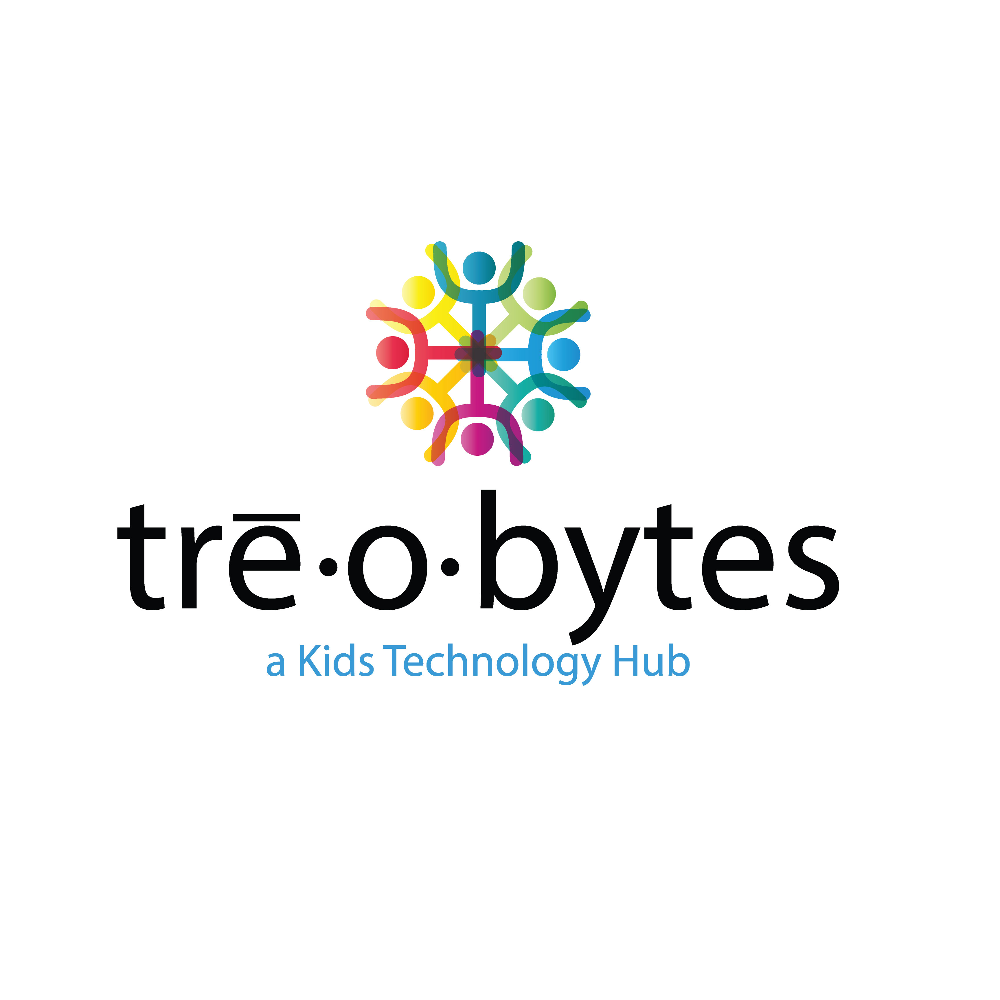

Experience

Treobytes — San Diego, CA
STEM Facilitator
August 2025 – April 2026- Led project-based STEM classes for middle school students, focusing on coding and hardware through Arduino microcontrollers.
- Taught students how to build, program, and troubleshoot circuits while connecting lessons to math, physics, and real world applications.
- Created an inclusive and collaborative classroom environment for 20–25 students, encouraging teamwork and curiosity.
- Collaborated with co-facilitators to adapt instruction, manage classrooms effectively, and support student success.
Skills: Curriculum Delivery, Classroom Management, STEM Education, Arduino, Coding, Educational Technology
Summer STEM Facilitator, Sally Ride STEM Camp
June 2025- July 2025- Taught 6th–8th grade students CAD and 3D printing, covering CAD fundamentals and hands on 3D printing.
- Taught 3rd–5th grade students STEMFaire: Hands-On Engineering, introducing core engineering concepts through guided projects.
- Completed onboarding, anti-harassment, and classroom management training through Treobytes prior to teaching.
- Obtained Adult and Pediatric First Aid/CPR/AED certification as a program requirement.
Skills: Curriculum Delivery, Classroom Management, STEM Education, Educational Technology, CAD, 3D Printing, CPR/First Aid Certified
UC San Diego ECE Department— San Diego, CA
Undergraduate Research Assistant
August 2024 – August 2025- Designed educational games integrating software and hardware to teach optics and photonics concepts, as part of research under Dr. Baghdadchi.
- Developed an optics project demonstrating solar energy applications, designing circuits with solar panels, op-amps, LEDs, and capacitors to control light responsiveness.
Skills: Arduino, Microcontrollers, Circuit Design, C/C++, CAD, 3D Printing, Laser Cutting, Soldering